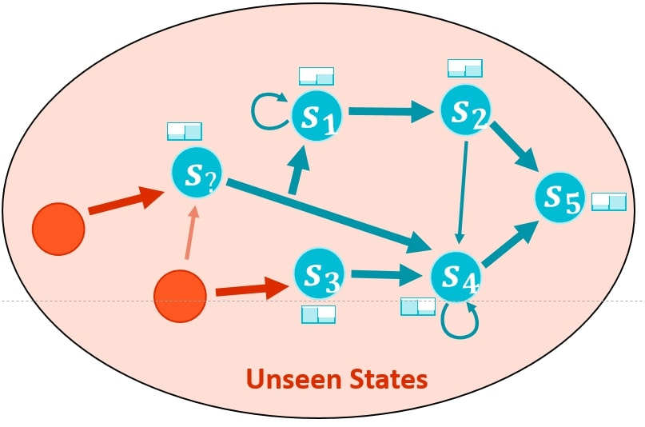
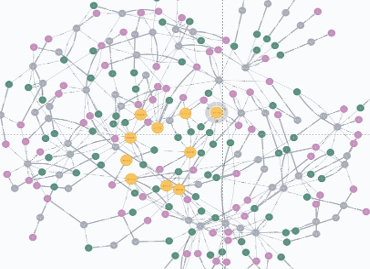
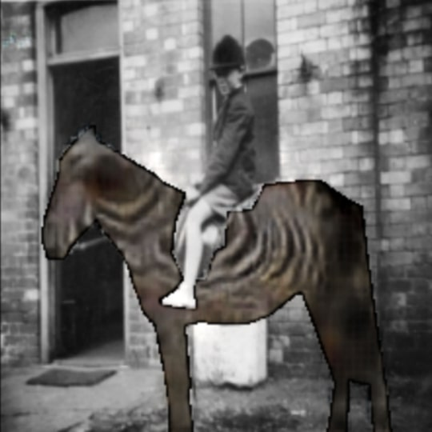
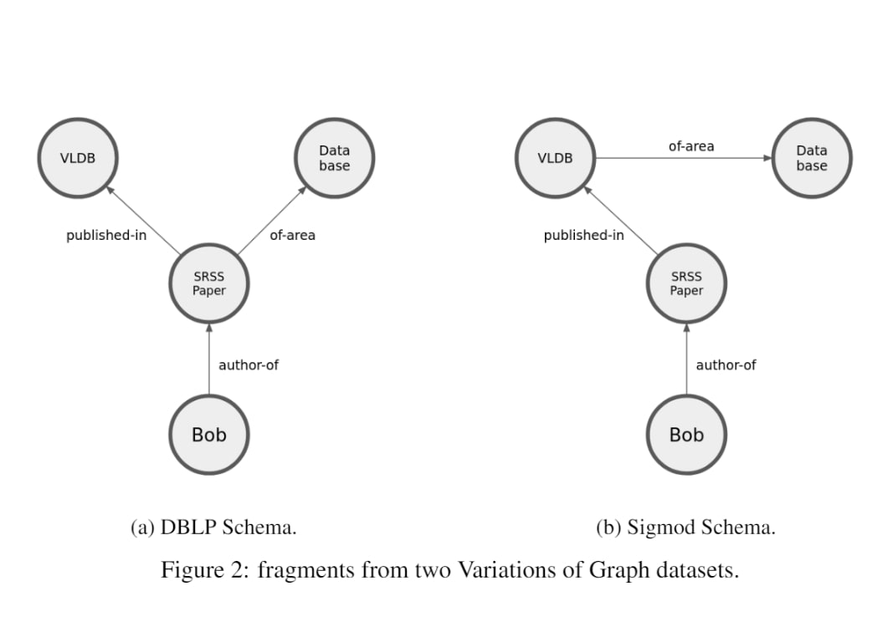
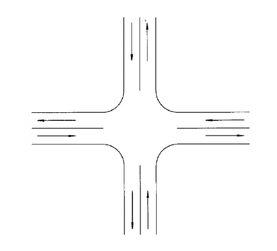

2016 - 2018
Business Intelligence Engineer at Logic Info. ◦ Project: Develop and maintain large-scale enterprise Data Warehousing and Business Intelligence solutions
◦ BI Consulting: Off-shore consulting for clients Alex & Ani, Holland and Barett, Gander Mountain, and Makro.
◦ Research: Customer Experience Analytics over in-house data lake sourced from customer call audio, text
reviews and curated twitter feeds.
2012 - 2016
Completed Bachelors in Computer Engineering from Kathmandu Engineering College, TU. Got initated into programming for the first time. Discovered that a well written code teaches you how to think. Never looked back.
Publications
Accept(Spotlight), ICLR 2021.
Aayam Shrestha, Stefan Lee, Prasad Tadepalli, Alan Fern
Accept(Oral), Offline Reinforcement Learning Workshop NeurIPS 2020
Aayam Shrestha, Stefan Lee, Prasad Tadepalli, Alan Fern
Under Review SIGMOD 2021
Yodsawalai Chodpathumwan, Aayam Shrestha, Stephen Ramsey, Arash Termehchy
Pet Projects

DAC-MDP is able to solve Atari games using Tabular MDPs. It acheives this by building a Non-Parametric MDP over the learned deep representations. Ut then leverages GPU optimized VI solver from BIGMDP. It serves as a strong yet inexpensive baseline for small to medium offline Reinforcement learning Tasks.

BigMDP: A simple library for creating and solving large MDPs with million of states. easy to use APIs for MDP building and comes with GPU optimized VI solver. Able to solve MDPs with a millions of states in less than 30 seconds.
Mars Imageset classification using Semi Supervised classification. A large unlabelled dataset was first clustered using k-means and features from a discrete autoencoder. The clusters are then mapped to known classes using as small labelled dataset.

Obj2Obj GAN is a Masked Image to Image translation using GANs for object inpainting. This was primarily designed for dataset augmentation for generating images from different permutaitons of the object positions/attributes. Poster Image shows a horse inpainted with a zebra.

Bias in Knowledge Graphs attempts to quantify and generalize the difference in performance of machine learning algorithms over knowledge grapphs with information preserving structural variations.

Trained a Traffic Flow Prediction network using historical intersection data. The prediciton network consisted of a simple vanila RNN. The end goal was to optimize vehicle wait time using the learned prediction model.
Gurukul is a full fledge Enterprise Resource Planning platform with both mobile and desktop applications, built to be deeployt as SaaS. This was my Bachelors Final year project. It is capable of all normal administrative tasks, moreover it natively integrtates student data analytics to detect anamolies/weak students as well as provides data-driven recommendations for weak students.